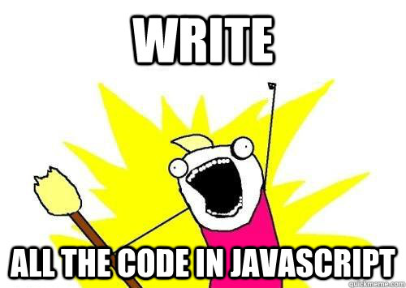

Jump starting node.js
JSFOO Mumbai Runup
Created by Joel Alenchery / @icecubed
Joel_Alenchery =
{
day_job: Full stack JavaScript Engineer @ Nexsales
twitter: @icecubed,
blog: http://blog.alenchery.org,
}
Code
Code for this workshop can be found on github:https://github.com/icecubed/jumpstart-node
Slides
You can also find slides here:http://icecubed.github.io/jumpstart-node/
NODE.JS!
Whats the big deal?
Cool things that Node is
- Javascript
- Non blocking I/O
- Event-driven
- Fast and Efficient
JavaScript

Advantages to JS
- Familiar
- Low barrier to entry
- Event driven and async nativly
- Team Redundancy (Front-end devs and back-end devs speak the same language)
This means you can...

Non blocking I/O
apples = db.query('get apples');
res.send(apples);
Traditional servers

db.query('get apples',
function(apples){
res.send(apples);
}
);
Node.js

Let's talk speed
Node.js was designed for highly-concurrent network applications
(Read: scalable web apps, among other things)
Fast
Node uses the V8 JavaScript engine powering Google Chrome
This means lightning fast JavaScript execution
Efficient
Node.js is asynchronous and event-driven
This means you have to think a bit differently, you have to think like a JavaScript dev ;)
Less talk .. more code !!

Basics
Interactive Mode
- Great for quick tests
- [Demo - node console]
Standard libraries
- Async by default
- Low level
- HTTP is first class citizen
- [Demo - hello world]
Developing and Debugging
- Lots of different choices
- pm2 (https://github.com/Unitech/pm2)
- node-inspector (step-through debugging) https://github.com/node-inspector/node-inspector
- [Demo - supervisor and debugging]
CommonJS Modules
- Prevents pollution of the global scope
- Two Styles of module development
- [Demo - your own local modules]
npm
- node's package manager (ruby gems)
- handles and resolves dependencies (Bundler)
- ~60,000 modules available today (easy to publish)
- [Demo - npm init]


Lets do something practical.
Part 1
Express.js
Express
A lightweight web framework for Node.js
three files, 17 lines of code
app.js, package.json, README.md
Step 1: Create package.json:
* - Watch for spaces in "name". Express doesn't like them.
{
"name": "Express-Basic-Tutorial",
"description": "I'm learning nodejs express!",
"version": "0.0.1",
"private": true,
"dependencies": {
"express": "4.4.0"
}
}
Hint
To find the latest available version of a module
$ npm info express version
"express": "*"
Step 2: Create README.md
This file needs some content for Express to be happy.
# Meet My App
App, audience. Audience, app.
Step 3: Profit Create app.js
var express = require('express');
var app = express();
app.get('/', function(req,res){
res.send("hi there");
});
var server = app.listen(3000, function(){
console.log("Listening on 3000");
});
Step 4: Install your dependencies
$ npm install
Step 5: Run it
$ node app.js
Listening on 3000
and visit
http://localhost:3000
That was easy..
Part 2
Advanced Express
(ooooooooh...)Surely, Express can do more
Yes, it can. And with a little help.
Express Generator
// install express generator
$ npm install -g express-generator
// create a new web application using ejs as the templating engine
$ express -e ejs myapp
and visit http://localhost:3000
checkpoint: git checkout -f step-ea-01
visite du code
app.js
var express = require('express');
var path = require('path');
var favicon = require('static-favicon');
var logger = require('morgan');
var cookieParser = require('cookie-parser');
var bodyParser = require('body-parser');
var routes = require('./routes/index');
var users = require('./routes/users');
var app = express();
// view engine setup
app.set('views', path.join(__dirname, 'views'));
app.set('view engine', 'ejs');
app.use(favicon());
app.use(logger('dev'));
app.use(bodyParser.json());
app.use(bodyParser.urlencoded());
app.use(cookieParser());
app.use(express.static(path.join(__dirname, 'public')));
app.use('/', routes);
app.use('/users', users);
/// catch 404 and forward to error handler
app.use(function(req, res, next) {
var err = new Error('Not Found');
err.status = 404;
next(err);
});
/// error handlers
// development error handler
// will print stacktrace
if (app.get('env') === 'development') {
app.use(function(err, req, res, next) {
res.status(err.status || 500);
res.render('error', {
message: err.message,
error: err
});
});
}
// production error handler
// no stacktraces leaked to user
app.use(function(err, req, res, next) {
res.status(err.status || 500);
res.render('error', {
message: err.message,
error: {}
});
});
module.exports = app;
/bin/www
bash script, includes app.js, runs server
This is executed from within package.json..
#!/usr/bin/env node
var debug = require('debug')('newapp');
var app = require('../app');
app.set('port', process.env.PORT || 3000);
var server = app.listen(app.get('port'), function() {
debug('Express server listening on port ' + server.address().port);
});
package.json
same old package.json
{
"name": "newapp",
"version": "0.0.1",
"private": true, // disallows npm from publishing
"scripts": {
"start": "node ./bin/www" // you know this guy
},
"dependencies": {
"express": "~4.2.0",
"static-favicon": "~1.0.0",
"morgan": "~1.0.0",
"cookie-parser": "~1.0.1",
"body-parser": "~1.0.0",
"debug": "~0.7.4",
"ejs": "~0.8.5"
}
}
/views/*.ejs
example: index.ejs
Note the <%= .. %> server tags
<!DOCTYPE html>
<html>
<head>
<title><%= title %></title>
<link rel='stylesheet' href='/stylesheets/style.css' />
</head>
<body>
<h1><%= title %></h1>
<p>Welcome to <%= title %></p>
</body>
</html>
/routes/*.js
These are akin to controllers in MVC
A route handler (callback) is associated with a request path
var express = require('express');
var router = express.Router();
/* GET home page. */
router.get('/', function(req, res) {
res.render('index', { title: 'Express' });
});
module.exports = router;
/public/stylesheets
/public/javascripts
/public/images
Don't we need a database and models?
Yes. We'll do that.
But before we get into data and models, let's get familiar..
Write a new view
at /views/visits.ejs:
<!DOCTYPE html>
<html>
<head>
<title>Page Visits</title>
<link rel='stylesheet' href='/stylesheets/style.css' />
</head>
<body>
<h1>Hi, <%= my_name %></h1>
<em>we'll fill this in a minute..</em>
</body>
</html>Write a route
at /routes/visits.js:
var express = require('express');
var router = express.Router();
router.get('/', function(req, res) {
res.render('visits', { my_name: "Joel" }); // -- find our view
});
module.exports = router;
Hook up requests with the route
in app.js:
...
var routes = require('./routes/index');
var users = require('./routes/users');
var visits = require('./routes/visits'); // -- the route
...
app.use('/', routes);
app.use('/users', users);
app.use('/visits', visits); // -- the request assignment
...
restart your server and check out
http://localhost:3000/visits
checkpoint: git checkout -f step-ea-02
Right, back to the database and models
First, add a bit to package.json for the mongo dependency
...
"debug": "~0.7.4",
"ejs": "~0.8.5",
"mongoose": "3.8.12"
}
}
and install
$ npm install
Create a new folder and file, /models/visit.js
var mongoose = require('mongoose')
,Schema = mongoose.Schema
,ObjectId = Schema.ObjectId;
var visitSchema = new Schema({
thread: ObjectId,
date: {type: Date, default: Date.now},
user_agent: {type: String, default: 'none'}
});
module.exports = mongoose.model('Visit', visitSchema);
And use that model to write data to mongo in app.js
...
// -- this can go near the top
var mongoose = require('mongoose');
mongoose.connect('mongodb://localhost/myapp');
...
// -- bunch this with the other requires
var Visit = require("./models/visit.js");
...
// -- we run some code inline with each request - a new request decorator
// -- put this before the route handlers
app.use(function(req, res, next){
new Visit({user_agent: req.headers['user-agent']}).save();
next();
});
app.use('/', routes);
app.use('/users', users);
app.use('/visits', visits); // -- the request assignment
...
careful
Now that our app will try to talk to a database, that database will need to be running
# in a Mac OS X terminal
$ mongod --config /usr/local/etc/mongod.conf
# in Ubuntu
$ mongod --config /etc/mongodb.conf
restart your server and check out
http://localhost:3000/visits
checkpoint: git checkout -f step-ea-03
I'm writing to a database, but I can't see my data!

Let's fix that.
Modify the route visits.js to fetch the data
Don't forget to pass visits to your view!
...
var Visit = require("../models/visit.js"); // -- new require
router.get('/', function(req, res) {
var query = Visit.find(); // -- only creating a query object
query.sort({date: -1}); // -- no execution here
// -- we still have a render() call
// -- but it is now in the callback to our database query execution
query.exec(function(err, visits){
// -- also note we are passing the results of our query to ejs
res.render('visits', { my_name: "Joel", visits: visits });
});
});
...
And modify the view visits.ejs to render data
..
<h1>Hi, <% my_name %></h1>
<h2>Look who's visiting your site!</h2>
<% for(var v in visits){ %>
<p><%- visits[v].user_agent %></p>
<% } %>
..
restart your server and check out
http://localhost:3000/visits
(keep refreshing, you'll see it)checkpoint: git checkout -f step-ea-04
Socket.IO
The final frontier
(cue music)Firstly, what is Socket.IO?
A Node JS module which provides bi-directional socket communication between client and server
What makes it different from regular web traffic over port 80?
Socket.IO establishes a persistent open socket over which both server and client can freely initiate communicate with each other
What does Socket.IO have to do with Express?
Socket.IO is its own thing, and neither Socket.IO nor Express need each other. But Socket.IO integrates with Express so easily that we just had to show it.
Let's try it
First, set up your dependency
...
"debug": "~0.7.4",
"ejs": "~0.8.5",
"mongoose": "3.8.12",
"socket.io": "1.0.3"
}
}
And install
$ npm install
Socket.IO runs as its own server, alongside our Express app
Put this snippet near the top of app.js, after 'app' is defined.
var server = require('http').createServer(app);
var io = require('socket.io').listen(server);
server.listen(3001);
We define "endpoints", or "namespaces" for the server, much like routes.
Here, '/chat' is the namespace.
Put this snippet somewhere after 'io' is defined in app.js.
var chat = io.of('/chat').on('connection', function(socket){
socket.on('chat', function(data){
data.color = 'green';
socket.emit('chat', data);
data.color = 'red';
socket.broadcast.emit('chat', data);
});
});
This is just an HTML form, which will help us interact with the server from the client
This snippet goes in index.ejs somewhere in the BODY tag..
<div id="chatlog" style="height: 200px;overflow-y:scroll;"></div>
<textarea id="chatwindow" cols="30" rows="10"></textarea>
<input id="send_chat" type="submit" value="Send" />
Also in index.ejs in the HEAD tag we'll put our client-side javascript, which connects to, reacts to, and sends messages to the server
<script src="http://localhost:3001/socket.io/socket.io.js"></script>
<script src="//code.jquery.com/jquery-1.10.2.min.js"></script>
<script type="text/javascript">
var chat_socket = io.connect('http://localhost:3001/chat');
chat_socket.on('chat', function(data){
$("#chatlog")
.append(
$("<p style='color:" + data.color + ";'></p>")
.text(data.isay)
);
});
$(document).on('click', "#send_chat", function(e){
chat_socket.emit('chat', {isay: $("#chatwindow").val()});
$("#chatwindow").val("");
});
</script>
restart your server and check out
http://localhost:3000
Try opening a few browser windows!
checkpoint: git checkout -f step-ea-05